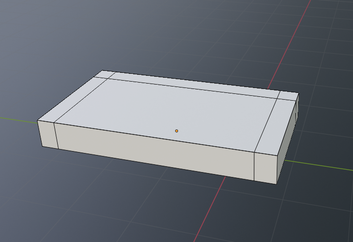
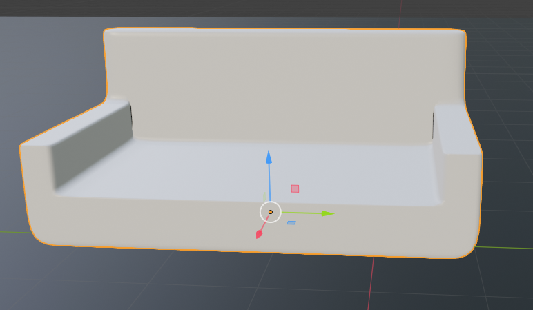

Na začetku dobimo osnovno obliko in ji dodamo "loopcuts" (Ctrl + R), ki omogočajo, da predmet oblikujemo.
Potem sem oblikoval ta predmet z "extrude tool" (E shortcut). Moramo imeti izbrane samo plošče in ne robov.
Potem zgladimo tobove s pomočjo "subsurface modifier" (bližnica za našega specifičnega, ki zgladi robove je Ctrl + 2). Potem dodamo še več loopcutov, da objekt dobi bolj naravno obliko.
Na koncu dodam še blazino, ki je oblikovan na isti način le, da uporabimo tudi funkcijo "poke edges", ki omogoča da dodamo blazini drugačno obliko in texturo.